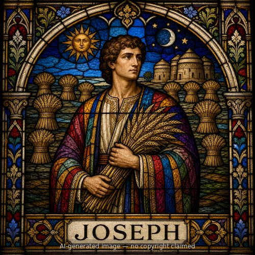
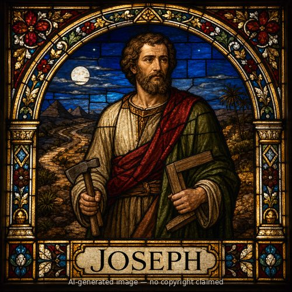

Joseph (M)
First named in Matthew 27:57-59
Joseph of Arimathea was "a prominent member of the Council," wealthy, and described as "a good and righteous man" who had not consented to the Sanhedrin's decision and action against Jesus (Mark 15:43; Luke 23:50-51). John's Gospel adds that he was "a disciple of Jesus, but a secret one for fear of the Jews" (John 19:38) -- a man who, like Nicodemus, had kept his faith private to avoid the cost of open association with Jesus while the religious establishment turned against Him. After the crucifixion, however, Joseph acted with real courage: he "gathered up courage and went in before Pilate, and asked for the body of Jesus," a request that required both boldness in approaching Roman authority directly and a willingness to be publicly associated with a man executed as a criminal (Mark 15:43). Pilate, surprised Jesus was already dead, confirmed it with the centurion before granting the request (15:44-45). Joseph, joined by Nicodemus, wrapped Jesus's body in fine linen with spices and laid it in his own new tomb, cut into rock, one in which no one had yet been buried, near the crucifixion site (Matthew 27:59-60; John 19:39-42). Being buried in a rich man's tomb fulfilled Isaiah's prophecy that the suffering servant would be assigned a grave "with the wicked" yet be "with a rich man in His death" (Isaiah 53:9). Joseph's quiet faith, tested when it mattered most, provided the tomb from which the resurrection would soon be proclaimed.
Thought for Today
Joseph of Arimathea gave up his own tomb for Jesus. May we hold nothing back when following Jesus costs us something.
References: Matthew 27:57-59; Mark 15:43-46; Luke 23:50; John 19:38
Genealogy
Father
—Mother
—Spouse(s)
—Children
—Connections
- Disciple of Christ (John 19:38)
Places
Other people named Joseph

